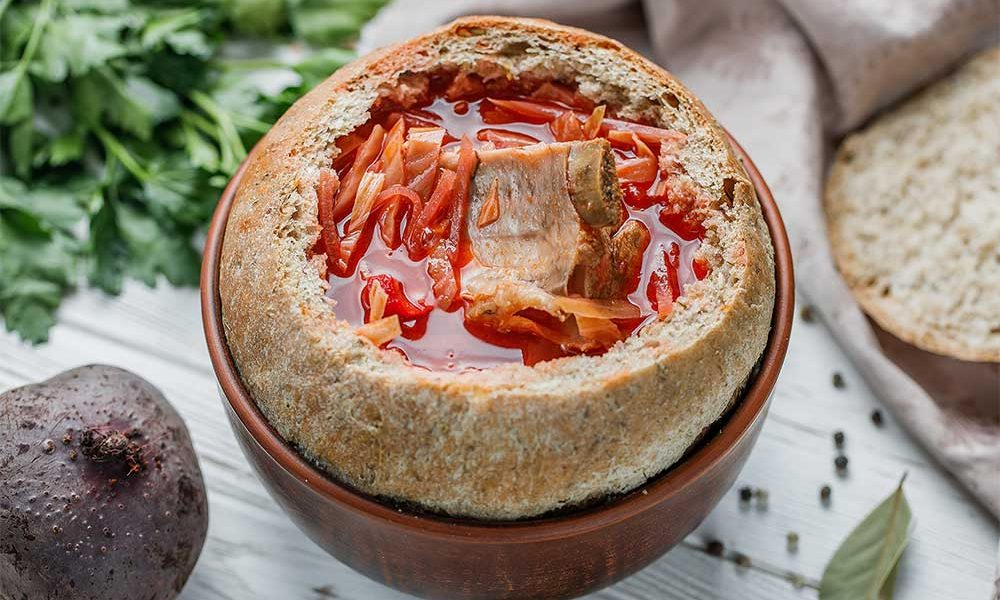
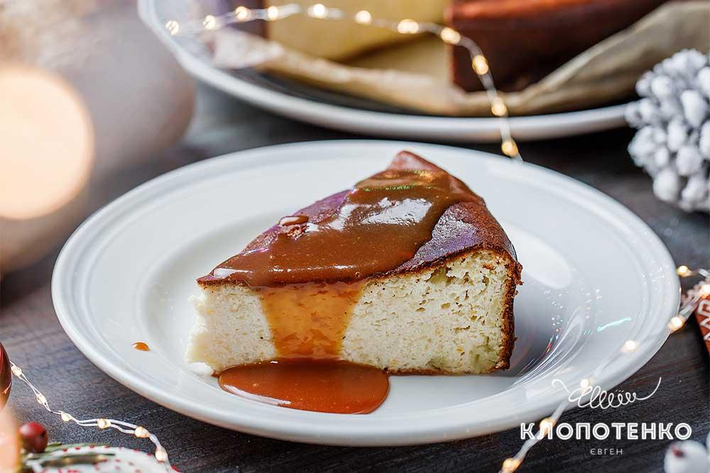
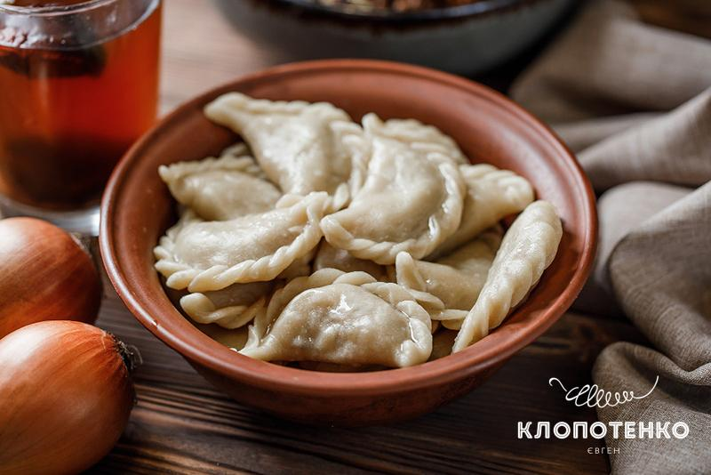

Ukrainian housewives take great care of their traditions and culture. One of the important aspects of Ukrainian well-being is the national cuisine. Ukrainian cuisine is famous for borsch, deruny (like potato pancakes), dumplings, holubtsi (stuffed cabbage), Lvivskiy plyatsok (like cheesecake) and much more.
We invite you to taste the delicacy, but be careful, the dishes of traditional Ukrainian cuisine are addictive 🥰 (they have even tried many times to appropriate by russia). We offer you to try dumplings, Lvivskiy plyatsok , or borsch.
The menu will be replenished 🙌🏻
Enjoy 💙💛
Especially Traditional Borsch

Borsch is a sour soup common in Eastern Europe and Northern Asia. In English, the word "borsch" is most often associated with the soup's variant of Ukrainian origin, made with red beetroots as one of the main ingredients, which give the dish its distinctive red color. The same name, however, is also used for a wide selection of sour-tasting soups without beetroots, such as sorrel-based green borsch, rye-based white borsch, and cabbage borsch.
Learn more...Classic Lvivskiy Plyatsok

Traditionally, pastries in Galicia were called plyatsky. They are baked in a large square shape and then cut into pieces. They usually combined cakes, cream and fillings. It resembles a cake, but easier to prepare. Now the most popular Lviv dessert, without a doubt, is Lviv cheesecake. It is believed that the original recipe was invented in the middle of the twentieth century by the famous chef Daria Tsvek and was published in her book "Sweet Cookies". But every housewife has her own vision, and now there are more than 30 recipes for Lviv cheesecake.
Learn more...Perfect Varenyky

Varenyky are Ukrainian national dish that is not inferior in popularity and importance even to borsch. Varenyky are made from fresh dough and a variety of fillings, such as meat, potatoes, mushrooms, vegetables, fruits, cheese and many more. Their fillings can be salty or sweet, lean or meaty. Recipes vary greatly depending on the region. Thus, in Polissia, crushed beans are added to the filling, in Zakarpattia it is cheese, in Chernihiv region bacon crisps are added to the dish.
Learn more...About Us
We are a small family restaurant in the city of outstanding and brave Cossacks, in the city with the mysterious island Khortytsia and one of the largest avenues. This city is 🥁... Zaporizhzhia. We really like our city, Ukraine and our cuisine.
The food prepared in our restaurant is prepared according to ancient family recipes. You can find us in the social networks.
🛵 Phone number our delievery:
(+38) 099 111 22 33
🥡 Address for self-pickup of orders:
Zaporizhzhia, Peremohy Street 226D.
📱 Also you can leave your phone number and we'll call you back :
🥟 You can find us here: